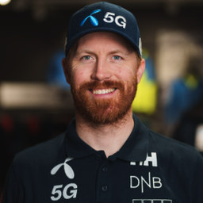

Lei inn en kommunikasjonsdirektør for en dag.
Når dere trenger skarpere budskap, et medieutspill, en bedre presentasjon eller en plan for innholdet — men ikke en ansettelse eller et byrå på retainer.
En SMS funker like bra. Da svarer jeg som regel raskere.
Start med det viktigste.
Dere trenger ikke starte med en stor kommunikasjonsplan eller et langvarig byråsamarbeid. På én arbeidsdag finner vi ut hva som er viktigst, skjerper budskapet og lager en konkret plan for neste steg.
Noen ganger betyr det å gjøre en pressemelding, kronikk eller presentasjon klar. Andre ganger betyr det å finne posisjonen dere bør eie, planlegge en podkast eller lage en samtale som fungerer på scenen.
Vi starter med én dag. Trenger dere mer etterpå, tar vi det derfra.
Dette kan jeg hjelpe med.
Posisjonering og innholdsstrategi
Finn historien dere skal eie.
Jeg hjelper dere å sette ord på hva dere står for, hvem dere skal nå og hvilke samtaler dere bør ta plass i. Resultatet er et skarpere budskap og en innholdsplan som er mulig å gjennomføre.
Passer når: Dere har mye kompetanse, men ikke én tydelig stemme eller retning utad.
PR og kommunikasjon
Gjør budskapet relevant utenfor eget selskap.
Fra budskap og pressemelding til kronikk, medietrening og konkrete medieutspill. Jeg hjelper dere å si noe som fortjener oppmerksomhet — og å velge riktig kanal og tidspunkt.
Passer når: Dere har en nyhet, en sterk faglig posisjon eller et tema dere bør eie offentlig.
Podcast og thought leadership
Bygg tillit gjennom bedre samtaler.
Jeg utvikler podcast- og innholdskonsepter for ledere og selskaper som har noe å lære bort. Fra idé, format og gjestestrategi til intervju, redaksjonell kvalitet og distribusjon.
Passer når: Dere vil bygge autoritet over tid, ikke bare kjøpe synlighet i korte kampanjer.
Event og paneldebattmoderering
Lag samtaler folk faktisk husker.
Jeg designer samtaler, intervjuer og paneler med tydelig konflikt, fremdrift og verdi for publikum. Jeg kan bidra med program, deltakerutvelgelse og moderering på scenen.
Passer når: Arrangementet skal bygge relasjoner, vise faglig tyngde eller skape en relevant samtale rundt et viktig tema.
Erfaring fra redaksjon, vekstselskaper og scenen.
Jeg har 15 år bak meg som journalist i VG og Aftenposten. Deretter bygde og drev jeg Shifter i ti år, Norges største publikasjon for startups, før det ble solgt til Schibsted.
I dag driver jeg Operators, der jeg intervjuer norske gründere og operatører om hvordan de faktisk bygger selskapene sine.
Jeg har vært tett på selskaper, gründere, mediehus og investorer i mange år. Det gjør at jeg raskt kan se hva som er interessant, hva som mangler og hva som faktisk vil fungere for målgruppen dere vil nå.
Hva folk sier.

«Jeg har skrevet en kronikk om noe jeg brenner veldig for, og nå er den ute på vg.no. En spesielt stor takk til Lucas H. Weldeghebriel, som har gitt meg gode innspill på teksten, sparket meg litt bak for å ikke bare prate om det, men også faktisk mene noe i det offentlige rom, og for at han åpnet døra inn mot VG. Lucas vet hvordan man navigerer det norske medielandskapet. Hvis du brenner inne med noe du ønsker debatt eller blest om, ta en prat med han. Der får du ærlige og gode tilbakemeldinger.»
«Lucas forstår hva folket vil ha, om det er presse, CXOs, eller kvinnen i gata. På innmari kort tid, hadde vi jammen en artikkel på trykk med vårt kjernebudskap i en av landets største aviser. Anbefales sterkt!»
Start med én dag.
Har dere noe viktig dere må få sagt, men trenger hjelp til å finne vinklingen, budskapet eller formatet? Send meg en mail eller en tekstmelding, så tar vi en uforpliktende prat om hva som kan være riktig neste steg.
Én dag koster 35 000 kroner eks. mva.
Lucas